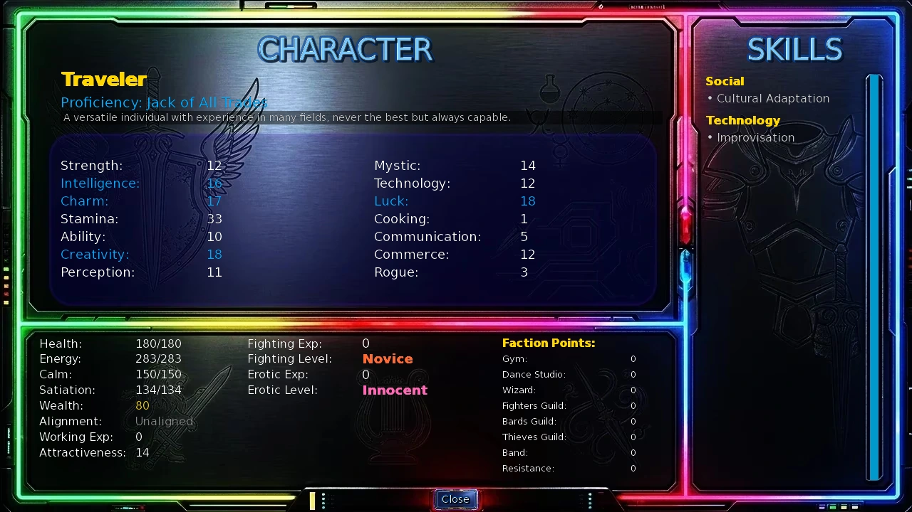
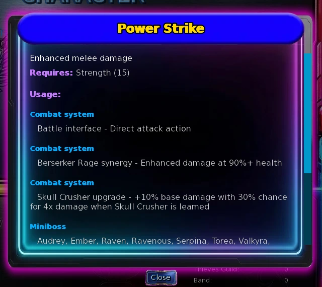
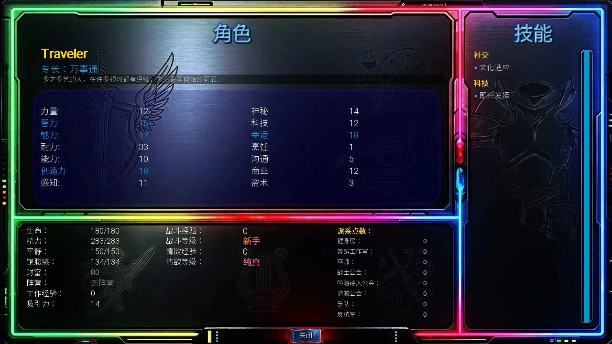
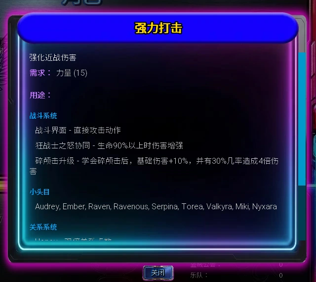

Select a screenshot to enlarge it. Screens show example inventories and progress.
Skills are normally learned once and retained. Attributes, learned skills, specialist paths and minigame upgrades serve different purposes. This index groups all 132 current catalogue skills as the character sheet does and shows how to obtain them.
- Open the character sheet and select a learned skill for details.
- Choose a named lesson, character route or ordinary random learning.
- Prepare the chosen entry’s own requirements and costs; book thresholds apply to that book selection.
Attributes and skills have different jobs
Attributes grow through activities, work and rewards; skills are learned abilities. Your starting proficiency sets initial numbers, two skills, equipment, a bedroom action and career access. You can develop other directions afterward.
Show the 14 ordinary attributes
| Attribute | Main uses |
|---|---|
| Strength | Physical attacks, strength checks and maximum Health. |
| Intelligence | Research, technical/economic learning, maximum Calm and starting wealth. |
| Charm | Social and relationship checks, performance, maximum Calm. |
| Stamina | Maximum Health, Energy and Satiation; long activities. |
| Ability | Quick attacks, Stormslash, coordination and dexterity checks. |
| Creativity | Music, performance, creative work and related learning. |
| Perception | Observation, encounters and perception-based learning. |
| Mystic | Magic damage/healing, rituals and magical learning. |
| Technology | Technical work, hacking and engineering checks. |
| Luck | Chance-based activities, games and starting wealth. |
| Cooking | Cooking activities, Chef work and culinary requirements. |
| Commerce | Business, Broker work, investments and commercial checks. |
| Communication | Customer-facing work, social routes and Tamer’s requirement. |
| Rogue | Theft, infiltration, heists and related checks. |
Tamer adds Taming at 1; Leadership adds Leadership at 1. Beast, Vampire, Attractiveness, experience, faction Clout and resources each track different progress.

Base attributes, effective values and growth
An ordinary effective attribute equals its base value plus permanent flat bonuses, active consumable bonuses and owned key-item bonuses. Attractiveness also separates base value from bonuses. Beast can include its temporary bonus; Vampire uses its own base value.
Some actions appear according to effective values while their final learning or unlock check still uses base values. If a lesson appears but cannot be confirmed, inspect the base attribute. Ordinary attributes have no universal hard cap of 50; activities, jobs and rewards can impose their own growth limits.
Show key-item percentage attribute bonuses
| Item | Bonus |
|---|---|
| Magic Spectacles | Intelligence +10%；Attractiveness +10% |
| Awesome Crown | Strength +2%；Intelligence +2%；Charm +2%；Stamina +2%；Ability +2%；Creativity +2%；Perception +2%；Mystic +2%；Technology +2%；Luck +2%；Cooking +2%；Commerce +2% |
| Ornate Locket | Charm +10%；Attractiveness +10% |
Each item calculates its percentage from the base value separately, rounds down with a minimum bonus of 1 for each affected attribute, then adds its result. It does not compound another item’s or potion’s bonus.
Show 24-hour temporary attribute bonuses
| Consumable | Attribute bonus |
|---|---|
| Focus | Intelligence, Mystic, Technology and Perception +25 each |
| Cologne | Charm and Attractiveness +10 each |
| Luck | Luck +50; designated activities have additional rolls |
| Desire | Beast +50 while Beast Mode applies; also grants 200 Erotic Experience when used |
An already-active effect cannot be consumed again to stack it. These effective-value bonuses do not become permanent base attributes. Other consumables use their own combat or timing effects.
Health, Energy, Calm and Satiation
Health mainly follows Strength and Stamina, Energy depends heavily on Stamina, and Calm mainly follows Charm and Intelligence. Satiation also follows Stamina. Temporary attribute bonuses and ordinary key-item attribute bonuses do not replace base attributes in these formulas.
Show maximum-resource calculation reference
Let S be the sum of ten base attributes: Strength, Intelligence, Charm, Stamina, Ability, Creativity, Perception, Mystic, Technology and Cooking. Luck, Commerce, Communication and Rogue are excluded. Floor brackets mean rounding down.
| Resource | Value t before the curve | Late-curve threshold t | Curve approaches | Curve rate k |
|---|---|---|---|---|
| Health | 3 × (Strength + Stamina) + ⌊S/2⌋ | 1,100 | 750 | 0.0025 |
| Energy | 8 × Stamina + ⌊S/2⌋ | 1,300 | 775 | 0.0020 |
| Calm | 3 × (Charm + Intelligence) + ⌊S/2⌋ | 1,100 | 750 | 0.0025 |
Through the threshold: P(t)=t−floor[t×(0.10+t/7500+t²/7500000)]. Above threshold a, round P(a)+[approach value−P(a)]×[1−exp(−k×(t−a))] to an integer.
For Satiation, t=4×Stamina+floor(S/4). Use t through 100; above 100, use 100+floor((t−100)/2). Starting wealth=2×(Intelligence+Luck)+Technology.
Permanent maximum-resource rewards are added after the curve. An owned Queenstone adds 1 maximum Health per level; Aether Stone adds 1 maximum Energy and Calm per level. Heart of the Ocean and Eye of Batman each add 50 maximum Health, Energy and Calm; Vital Heartcap adds 50 maximum Health. The Second Pulse then multiplies maximum Health by 1.10, followed by Bio-Reactor Core at+1% per level. Mnemonic Battery multiplies maximum Energy at+1% per level. Thus 750/775 are curve approach values, rather than final hard caps after bonuses.
Endurance Training, Inner Peace and Iron Constitution respectively multiply applicable negative Energy, Calm and Health adjustments by 0.90 before that adjustment’s rounding. Combat and special activities can use their own drain handling.
Starting proficiencies and long-term builds
Ordinary character creation offers 11 proficiencies and 20 additional points for the ten primary attributes. The tables show base values before those 20 points. Cooking, Commerce, Communication and Rogue use the proficiency’s fixed starting values. Main/secondary/weakness labels describe the starting direction without adding a separate growth-rate bonus to every action.
Show starting skills, base values and bedroom actions
| Starting proficiency | Two starting skills |
|---|---|
| Body Builder | Power Strike / Endurance Training |
| Scholar | Arcane Knowledge / Researching |
| Salesman | Silver Tongue / Networking |
| Computer Expert | Engineering Genius / System Hacking |
| Musician | Musical Virtuosity / Master Performer |
| Martial Artist | Martial Arts / Combat Reflexes |
| Player | Seduction / Reading People |
| Games Master | Tactical Awareness / Cheating |
| Athlete | Endurance Training / Adrenaline Rush |
| Magician | Elemental Blast / Illusion Weaving |
| Jack of All Trades | Improvisation / Cultural Adaptation |
| Proficiency | Strength | Intelligence | Charm | Stamina | Ability | Creativity | Perception | Mystic | Technology | Luck |
|---|---|---|---|---|---|---|---|---|---|---|
| Body Builder | 29 | 8 | 9 | 21 | 11 | 12 | 10 | 1 | 8 | 6 |
| Scholar | 7 | 30 | 8 | 10 | 6 | 18 | 20 | 12 | 9 | 13 |
| Salesman | 8 | 11 | 28 | 10 | 1 | 9 | 13 | 6 | 7 | 20 |
| Computer Expert | 6 | 17 | 8 | 1 | 15 | 12 | 9 | 10 | 27 | 11 |
| Musician | 9 | 10 | 18 | 8 | 13 | 27 | 1 | 11 | 6 | 12 |
| Martial Artist | 15 | 8 | 6 | 15 | 29 | 2 | 15 | 13 | 10 | 9 |
| Player | 11 | 13 | 30 | 10 | 12 | 8 | 16 | 1 | 6 | 18 |
| Games Master | 8 | 18 | 1 | 12 | 10 | 15 | 26 | 9 | 13 | 29 |
| Athlete | 24 | 9 | 11 | 28 | 15 | 6 | 8 | 10 | 1 | 12 |
| Magician | 7 | 15 | 13 | 9 | 11 | 22 | 20 | 28 | 12 | 8 |
| Jack of All Trades | 12 | 16 | 17 | 13 | 10 | 18 | 11 | 14 | 12 | 18 |
| Proficiency | Cooking | Commerce | Communication | Rogue |
|---|---|---|---|---|
| Body Builder | 1 | 3 | 2 | 2 |
| Scholar | 1 | 6 | 4 | 2 |
| Salesman | 1 | 15 | 10 | 3 |
| Computer Expert | 1 | 8 | 3 | 5 |
| Musician | 1 | 4 | 7 | 3 |
| Martial Artist | 1 | 3 | 2 | 2 |
| Player | 1 | 10 | 9 | 7 |
| Games Master | 1 | 8 | 4 | 4 |
| Athlete | 1 | 5 | 3 | 2 |
| Magician | 1 | 2 | 3 | 3 |
| Jack of All Trades | 1 | 12 | 5 | 3 |
| Proficiency | Bedroom action | Base reward | Base time / drains |
|---|---|---|---|
| Body Builder | Lift Weights | Strength +1 | 45 min; -30 Energy |
| Scholar | Study Research Papers | Intelligence +1 | 45 min; -15 Energy, -15 Calm |
| Salesman | Practice Sales Pitch | Commerce +1 | 45 min; -15 Calm, -15 Energy |
| Computer Expert | Work on Code Projects | Wealth=effective Intelligence×2 | 45 min; -15 Energy, -15 Calm |
| Musician | Practice Guitar | Creativity +1 | 45 min; -15 Calm, -15 Energy |
| Martial Artist | Practice Martial Forms | Ability +1 | 45 min; -20 Energy, -10 Calm |
| Player | Practice Social Skills | Attractiveness +1 | 45 min; -20 Calm, -10 Energy |
| Games Master | Plan Game Strategies | Luck +1 | 45 min; -15 Energy, -15 Calm |
| Athlete | Aerobics Workout | Stamina +1 | 45 min; -30 Energy |
| Magician | Crystal Meditation | Mystic +1 | 45 min; -15 Calm, -15 Energy |
| Jack of All Trades | Practice Various Skills | Perception +1 | 45 min; -15 Energy, -15 Calm |
Everyone starts with level 1 proficiency equipment, Grimoire and Casual Outfit. Body Builder/Athlete also have level 1 Armor; Scholar/Salesman Formal Outfit; Musician/Player Dating Outfit; Computer Expert a Ranged Weapon; Martial Artist a Melee Weapon. Base supplies include 10 Food and one each of the Health, Energy and Calm recovery supplies.
For longer days, develop Stamina and recovery. Physical routes benefit from Strength and Ability; magic routes need Mystic plus enough Energy and Calm. Jack of All Trades can enter multiple ordinary careers, while still meeting each job’s attribute and time conditions. The three late combat specialist paths are separate from starting proficiency and can coexist; see Specialist Classes for access, benefits and full progression.
Careers, skills and Working Experience
The corresponding proficiency’s career normally appears at 30 in its relevant effective attribute. A shift has base costs of 60 minutes and 30 Energy, with an 8% chance to raise its work attribute by 1. Location and career hours still apply. Named skills, proficiency equipment, Working Experience and difficulty affect income; inspect the action tooltip for the current result.
Show ordinary career access and income skills
| Career | Location | Ordinary proficiency access | Attribute / hours | Income skill |
|---|---|---|---|---|
| Personal Trainer | City Gym (Uptown) | Body Builder / Jack of All Trades | Strength ≥30; 06:00–21:00 | Berserker Rage ×2 |
| Teacher | University Classroom | Scholar / Jack of All Trades | Intelligence ≥30; 09:00–17:00 | Material Science ×2 |
| Car Salesman | Sports Car Dealer | Salesman / Jack of All Trades | Communication ≥30; 09:00–18:00 | Negotiation ×2 |
| Illusionist | Mystic Curiosities Shop | Magician / Jack of All Trades | Mystic ≥30; 09:00–18:00 | Illusion Weaving ×2 |
| IT Specialist | University Computer Lab | Computer Expert / Jack of All Trades | Technology ≥30; 09:00–17:00 | Quantum Computing ×2 |
| Producer | Music Studio | Musician / Jack of All Trades | Creativity ≥30; 12:00–23:00 | Song Writing ×2 |
| Sensei | Dojo | Martial Artist / Jack of All Trades | Stamina ≥30; 10:00–22:00 | Weapon Mastery ×2 |
| Promoter | Night Club | Player / Jack of All Trades | Charm ≥30; 00:00–03:00 / 21:00–24:00 | Reputation Management ×2 |
| Gamer | Retro Arcade | Games Master / Jack of All Trades | Luck ≥30; 12:00–22:00 | Cheating ×2 |
| Coach | Basketball Court | Athlete / Jack of All Trades | Stamina ≥30; 09:00–17:00 | Leadership ×2 |
| Chef | Downtown Restaurant | Any starting proficiency | Cooking ≥30; 10:00–22:00 | Creative Cooking ×2 |
| Broker | Investment Planning | Any starting proficiency | Commerce ≥30; 09:00–17:00 | Market Analysis ×2 |
Ordinary base pay draws from the effective work attribute through twice that value, then adds 15; its listed skill doubles that component. Broker instead draws between Charm+Communication and Commerce+Intelligence, then adds Luck. Chef also fills Satiation.
Without the currently active Master upgrade, Jack’s proficiency-career pay component is 70%; Chef and Broker have no such penalty. Active proficiency-equipment level multiplies the corresponding career’s income, including Working Experience money. Ordinary effect uses at most level 5; an acquired and currently active Master upgrade allows level 10. A retained equipment level does not automatically replace the new cycle’s Master upgrade.
Applicable work draws extra pay from 0 through current Working Experience, then advances that experience. Business Acumen doubles the bonus limit; Diligent Worker raises base experience gain from 1 to 2; Responsibility gives a separate 25% chance of+1. Combined levels of the three outfits give another+1 chance at combined level/16, capped at 100%. See Wealth Guide for the broader income route.
Choose a learning route
| Method | Current rule |
|---|---|
| Starting proficiency | Most ordinary proficiencies grant two starting skills; see Getting Started for the actual pairs. |
| Crystal Enlightenment | At a Crystal-service location, spend 1 Crystal and zero minutes for a random unknown ordinary skill. Its current 105-skill range does not check the catalogue’s base-stat thresholds. |
| Gonzo’s skill book | At his ordinary-dungeon shop, pay 5 Dragon Coins, or 4 with Negotiation. Preview the random book before confirming. Only unknown ordinary skills meeting its base-stat filter are selected. |
| Location lessons | Visit the teaching location and meet that action’s own requirements. Learning costs are separate from later skill-use costs. |
| Character / story routes | Meet the teacher and follow the relevant Objectives. Location, schedule, relationship stage, completed events or access requirements can control the entry. Teacher links open the relevant route guide. |
Ordinary random learning excludes known skills. Crystals and books have different filters, and other dungeon teaching events use their own conditions. If Gonzo has nothing eligible, inspect Crystal training or a named teacher.
The purpose column summarizes a skill’s role and confirmed functions. Some skills open activity, job, dialogue or event options without granting a hidden bonus to every related action. Use Combat for complete attack, spell and trigger rules.

Find a skill for the task
- Combat Scanner reveals enemy information; use Combat for attacks, spells and procs.
- Data Mining reveals more numeric information. Gem’s Mining skill is for dwarven dungeon walls. The separate outdoor mining game needs no learned skill; see Mining for its entry and pickaxes.
- Leadership opens TD’s related attribute; Combat Leadership is a separate skill. Prepare the army with Tower Defense.
- Blink provides anchor travel; Shadow Step enables escape from eligible fights. They have different uses.
- The Romantic skill and Romantic relationship stage are separate concepts. Check the character card for a teacher’s stage requirement.
- Known qualifying spells contribute part of Wizard Clout. Keep learning and doing related activities; see Wizard Faction.
Combat
Show every skill in this group
| Skill | Purpose | Current sources | Gonzo book base-stat filter |
|---|---|---|---|
| Acrobatics | Enhanced mobility and evasive maneuvers | Ordinary random learning; Acrobat Training Hall | Ability ≥18 |
| Adrenaline Rush | Doubles maximum physical attack damage below 30% health | Ordinary random learning | Stamina ≥15 |
| Archery Focus | Improves TD shot spread, Neural Targeting tracking, and Darts/Archery perfect-power zones. | Ordinary random learning; Riki; Robin | Perception ≥15 |
| Battle Meditation | Combat recovery involving Energy and Health. | Ordinary random learning; Monk's Temple Training Hall | Mystic ≥10 |
| Berserker Rage | Massive damage boost with health cost | Ordinary random learning; Yrsa | Strength ≥20 |
| Combat Leadership | Boost ally effectiveness | Ordinary random learning; Fighters Guild | Charm ≥15 |
| Combat Reflexes | Resist web effects | Ordinary random learning; Anthrax | Ability ≥15 |
| Counterattack | Counterattack-themed choices in encounters and conversations | Ordinary random learning; Master Lilu | Ability ≥18 |
| Defensive Stance | Passively reduces physical damage by up to 10% | Ordinary random learning; Valkyra | Stamina ≥12 |
| Disarming Technique | Quick Attack and Sovereign Edge have a 10% disarm chance per action; the enemy's next damaging action deals half damage | Ordinary random learning; Master Lilu | Ability ≥20 |
| Endurance Training | Reduces negative Energy adjustments; useful for repeated activities. | Ordinary random learning; Knight's Training Grounds | Stamina ≥30 |
| Exploit Weakness | Find and target enemy vulnerabilities | Ordinary random learning; Master Lilu | Intelligence ≥16 |
| Fleet Footed | Improved chance to flee from combat | Ordinary random learning; Master Lilu | Ability ≥15 |
| Intimidating Presence | Frighten enemies | Ordinary random learning; Yrsa | Strength ≥18 |
| Iron Constitution | Reduces some Health costs and supports physical resilience. | Ordinary random learning; Human Performance Optimization Lab | Strength ≥30 |
| Iron Will | Resist sleep, charm, and disorientation | Ordinary random learning; Underground Modification Clinic | Stamina ≥16 |
| Martial Arts | Unarmed combat mastery | Ordinary random learning | Ability ≥25 |
| Pain Tolerance | Increases your effective armor level by 1 | Ordinary random learning; Bio-Optimization Medical Center | Stamina ≥18 |
| Power Strike | Enhanced melee damage | Ordinary random learning; Valkyra; Fighters Guild | Strength ≥15 |
| Quick Draw | Faster weapon deployment | Ordinary random learning; Entertainment Tower | Ability ≥20 |
| Shadow Step | Guaranteed escape from eligible fights; boss restrictions still apply. | Shadow | — (specific source) |
| Side-Step | Upgrades Quick Attack with a 20% chance to dodge the enemy's next attack and strike again | Valkyra | — (specific source) |
| Skull Crusher | Upgrades Power Strike with +10% base damage and a 30% chance for devastating 4 x damage | Yrsa | — (specific source) |
| Sovereign Edge | Upgrades basic Attack with Coradio's perfected sword discipline, including rare decapitation and mortal blow strikes | Coradio | — (specific source) |
| Stormslash | A physical attack using Strength and Ability; see Combat. | Ordinary random learning; Muramasa | Ability ≥22 |
| Swordplay | Reduced miss chance for physical attacks | Ordinary random learning; Valkyra | Ability ≥20 |
| Tactical Awareness | Predict enemy moves | Ordinary random learning; Artemis; Neena | Intelligence ≥15 |
| Tai-Chi | A 5% chance to reflect 5% of incoming damage back to the attacker. Bonuses scale with True Neutral alignment | Master Lilu | — (specific source) |
| Weapon Mastery | Proficiency with all weapon types | Ordinary random learning; Anthrax; Valkyra; Fighters Guild | Ability ≥18 |
Magic
Show every skill in this group
| Skill | Purpose | Current sources | Gonzo book base-stat filter |
|---|---|---|---|
| Arcane Knowledge | Understanding of magic theory | Ordinary random learning; Aziza | Intelligence ≥20 |
| Arcane Surge | Offensive magic can trigger a triple-damage non-elemental surge; see Combat. | Sashina | — (specific source) |
| Blink | Short-range teleportation through mystical space-folding | Blinky | — (specific source) |
| Dark Magic | Command shadow energy and forbidden arcane forces | Ordinary random learning; Lillian's Lair; Dedicated Crystal lesson:3 Crystals, zero minutes | Mystic ≥30 |
| Divination | Glimpse future possibilities | Ordinary random learning; Blinky | Mystic ≥22 |
| Elemental Blast | Destructive magical attack | Ordinary random learning; Sashina | Mystic ≥20 |
| Enchantment | Enhance weapons or items | Ordinary random learning; Aziza | Mystic ≥16 |
| Energy Drain | Steal enemy vitality | Ordinary random learning; Melanthe | Mystic ≥24 |
| Healing Touch | Restore health to self or others | Ordinary random learning; Sashina; Monk's Temple Training Hall | Mystic ≥15 |
| Illusion Weaving | Create false images | Ordinary random learning; Sashina | Mystic ≥20 |
| Inner Peace | Reduces negative Calm adjustments. | Ordinary random learning; Monk's Temple Training Hall | Mystic ≥30 |
| Light Magic | Harness the power of holy light and divine energy | Ordinary random learning; Seraph's Sanctuary; Dedicated Crystal lesson:3 Crystals, zero minutes | Mystic ≥30 |
| Mana Channeling | Enhanced magical energy | Ordinary random learning; Aziza | Mystic ≥18 |
| Master Wizard | Ultimate magical power and arcane supremacy | Ordinary random learning; Gandon | Mystic ≥60 |
| Nature's Embrace | Defending in combat restores 4-10% of maximum energy | Audrey | — (specific source) |
| Pixie's Promise | Once each day, restores full Health when ordinary combat would defeat you. | Pixie | — (specific source) |
| Precognition | A separate 10% incoming-attack dodge check; see Combat for stacking. | Story Beat 39 | — (specific source) |
| Protective Ward | Magical damage reduction | Ordinary random learning; Blinky | Mystic ≥14 |
| Ritual Mastery | Complex magical ceremonies | Ordinary random learning; Sabbath | Mystic ≥22 |
| Sacred Mending | A 30% chance to double the effectiveness of healing magic | Amelia | — (specific source) |
| Sashina's Gift | An additional fire/ice magic proc; see Combat for its separate rules. | Sashina | — (specific source) |
| Soul Sight | Reveals NPC alignment. | Azariel | — (specific source) |
| Spirit Communication | Talk to supernatural entities | Ordinary random learning; Zodiac | Mystic ≥18 |
| Telekinesis | Move objects with mind | Ordinary random learning; Sashina | Mystic ≥25 |
| Tempest Strike | Imbues Stormslash with lightning energy, granting a chance to chain lightning across the enemy | Sylwithe | — (specific source) |
| Transmutation | Special alchemical and encounter options. | Sashina | — (specific source) |
| Vampirism | Improves relevant Vampire Fangs and Grimoire combat procs. | Lady Carmilla | — (specific source) |
| Wizardry | Advanced magical mastery and spellcasting abilities | Ordinary random learning; Gandon | Mystic ≥40 |
Technology
Show every skill in this group
| Skill | Purpose | Current sources | Gonzo book base-stat filter |
|---|---|---|---|
| AI Programming | Create intelligent software | Ordinary random learning; Glitch | Technology ≥28 |
| Alchemy | Brew potions and compounds | Ordinary random learning; Sabbath | Intelligence ≥18 |
| Anthropology | Study of human cultures and societies | Ordinary random learning; University Classroom | Intelligence ≥15 |
| Automated Systems | Design self-operating devices | Ordinary random learning; Glitch | Intelligence ≥25 |
| Combat Scanner | Displays enemy combat information during ordinary combat. | EPOM | — (specific source) |
| Cybernetics | Interface technology with biology | Ordinary random learning; Tinker; Cognitive Optimization Academy | Technology ≥26 |
| Data Mining | Extract valuable information from systems | Ordinary random learning; Universal Knowledge Synthesis Institute | Technology ≥20 |
| Digital Forensics | Analyze technological evidence | Ordinary random learning; Universal Knowledge Synthesis Institute | Technology ≥18 |
| Engineering Genius | Design complex mechanisms | Ordinary random learning | Intelligence ≥22 |
| Improvisation | Adapt and problem-solve creatively | Ordinary random learning; Pixel | Creativity ≥20 |
| Lockpicking | Open secured containers | Ordinary random learning; Thieves Guild | Ability ≥16 |
| Master Engineer | Advanced mechanical and technical options. | EPOM | — (specific source) |
| Material Science | Understanding of substances | Ordinary random learning; Terra; Universal Knowledge Synthesis Institute | Intelligence ≥19 |
| Mining | Enables mining dwarven dungeon walls; the separate outdoor mining game needs no learned skill. | Gem | — (specific source) |
| Nano-Engineering | Microscopic construction | Ordinary random learning; AIMy | Intelligence ≥28 |
| Network Security | Protect systems from intrusion | Ordinary random learning; University Computer Lab | Technology ≥25 |
| Quantum Computing | Harness advanced computational power | Ordinary random learning; Glitch | Technology ≥30 |
| Researching | Understand technical plans | Ordinary random learning; Chloe; Mary Ann; University Research Lab | Intelligence ≥15 |
| Resource Optimization | Maximize efficiency | Ordinary random learning; University Classroom | Intelligence ≥16 |
| Sleight of Hand | Master the art of misdirection and dexterous manipulation | Ordinary random learning; Mystic Curiosities Shop | Ability ≥16 |
| System Hacking | Bypass digital security measures | Ordinary random learning; University Computer Lab | Technology ≥22 |
| Time-Tech Integration | Cross-era technology mastery | Ordinary random learning; Tinker | Intelligence ≥30 |
Economic
Show every skill in this group
| Skill | Purpose | Current sources | Gonzo book base-stat filter |
|---|---|---|---|
| Accounting | Manage financial records | Ordinary random learning; University Classroom | Intelligence ≥15 |
| Appraisal | Determine true value | Ordinary random learning; Silas | Perception ≥16 |
| Business Acumen | A sharp eye for value - doubles the maximum experience-based wage bonus earned from jobs | Maggie | — (specific source) |
| Diligent Worker | Hard work pays off doubly - gain double working experience from every job | Maggie | — (specific source) |
| Economic Warfare | Undermine competitors | Ordinary random learning; Cressida | Commerce ≥22 |
| Entrepreneurship | Start successful ventures | Ordinary random learning; Offices | Commerce ≥20 |
| Investment Savvy | Profitable money management | Ordinary random learning | Intelligence ≥19 |
| Market Analysis | Predict economic trends | Ordinary random learning; Jade | Commerce ≥17 |
| Responsibility | A practical work ethic that sometimes turns ordinary job experience into extra growth | Diane | — (specific source) |
Performance
Show every skill in this group
| Skill | Purpose | Current sources | Gonzo book base-stat filter |
|---|---|---|---|
| Artistic Vision | Create meaningful art | Ordinary random learning; Sandra | Creativity ≥24 |
| Cheating | Bend rules to your advantage in games and contests | Ordinary random learning; Vera | Luck ≥15 |
| Comedy Timing | Perfect humorous delivery | Ordinary random learning; Motley | Creativity ≥16 |
| Dance Mastery | Graceful and expressive movement | Ordinary random learning; Dance & Yoga Studio | Ability ≥20 |
| Dramatic Arts | Powerful emotional performance | Ordinary random learning; Sandra | Creativity ≥20 |
| Master Performer | Captivating entertainment | Ordinary random learning | Creativity ≥22 |
| Music Production | Create and mix professional recordings | Ordinary random learning; Music Studio | Technology ≥25 |
| Musical Virtuosity | Exceptional musical ability | Ordinary random learning | Creativity ≥25 |
| Song Writing | Compose original music and lyrics | Ordinary random learning; Bards Guild | Creativity ≥25 |
| Stage Presence | Command audience attention | Ordinary random learning; Cotton | Charm ≥18 |
| Storytelling | Engaging narrative delivery | Ordinary random learning; Kent | Creativity ≥18 |
Intimate
Show every skill in this group
| Skill | Purpose | Current sources | Gonzo book base-stat filter |
|---|---|---|---|
| Emotional Bonding | Deep relationship building | Ordinary random learning; Kurenai | Charm ≥16 |
| Intimate Communication | Express desires clearly | Ordinary random learning; Kurenai | Charm ≥18 |
| Mystic Seduction | Blend magical power with seductive techniques | Sashina | — (specific source) |
| Pleasure Arts | Techniques for intimate interactions. | Ordinary random learning; Kurenai | Ability ≥20 |
| Romantic | Understanding romantic situations and emotional expression. | Ordinary random learning; Esperanza | Charm ≥20 |
| Seduction | Romantic attraction mastery | Ordinary random learning; Vera; Vixen | Charm ≥20 |
| Sensual Mastery | Physical appeal and intimate interactions. | Ordinary random learning | Use Crystals or another normal source |
| Tantric Arts | Extended intimate experiences | Ordinary random learning | Stamina ≥18 |
| Trust Building | Establish deep confidence | Ordinary random learning | Charm ≥17 |
Culinary
Show every skill in this group
| Skill | Purpose | Current sources | Gonzo book base-stat filter |
|---|---|---|---|
| Cook Food | Master basic cooking techniques and food preparation | Ordinary random learning; Downtown Restaurant | Intelligence ≥18 |
| Creative Cooking | Innovate and create unique culinary experiences | Ordinary random learning; Unregistered Housing Complex | Creativity ≥25 |
| Fry Fish | Perfect the art of preparing fish dishes | Ordinary random learning; Fishing Village (Coast) | Ability ≥15 |
| Master Chef | Advanced cooking and kitchen activities. | Chef Martha; Poppy | — (specific source) |
Physical
Show every skill in this group
| Skill | Purpose | Current sources | Gonzo book base-stat filter |
|---|---|---|---|
| Master Baiter | Expert fishing technique improves rare catch chances | Old Fisherman in the ordinary dungeon’s water areas:5 Dragon Coins | — (specific source) |
| Perfect Metabolism | Reduces Satiation loss on applicable activities. | Ordinary random learning; Human Performance Optimization Lab | Strength ≥35 |
| Swim | Ability to swim effectively in water | Ordinary random learning; Kristen; Summer | Stamina ≥10 |
Specific sources and important conditions
Twenty-seven skills are excluded from these two ordinary random methods. Obtain them through their listed teacher, location or Objective. If a skill has multiple normal sources, choose a route rather than paying to learn it repeatedly.
Fashion’s Tailor Shop lesson requires base Attractiveness 18,$300 and 180 minutes, with base drains 50 Energy and 40 Calm. That Attractiveness gate is currently enforced. Sensual Mastery remains obtainable through Crystals or another normal source; Gonzo’s base-stat filter does not select it.
Stormslash has a current route through Saber and also belongs to the ordinary random range. See Specialist Classes and Combat for path bonuses, spell use and escape exceptions.
Named lesson costs
These are base costs and drains; learned benefits or current conditions can change the final amount. Location hours and teacher schedules still apply. Follow the teacher link for personal-Objective prerequisites.
Show all 38 location lessons
| Learned skill | Lesson location / teacher | Thresholds and lesson hours | Base costs / drains |
|---|---|---|---|
| Accounting | University Classroom | Intelligence ≥15 | 180 min, $200, -50 Energy, -40 Calm |
| Acrobatics | Acrobat Training Hall | Ability ≥18; 06:00–21:00 | 180 min, $200, -50 Energy, -30 Calm |
| Alcohol Tolerance | Downtown Bar | Stamina ≥15; 00:00–03:00 / 20:00–24:00 | 120 min, $200, -40 Energy, -40 Calm |
| Anthropology | University Classroom | Intelligence ≥15 | 180 min, $200, -50 Energy, -40 Calm |
| Battle Meditation | Monk's Temple Training Hall | Mystic ≥10 | 200 min, $100, -60 Energy, -60 Calm |
| Combat Leadership | Fighters Guild | Charm ≥15; 10:00–20:00 | 220 min, $300, -60 Energy, -40 Calm |
| Cook Food | Downtown Restaurant | Intelligence ≥18; 10:00–22:00 | 200 min, $250, -40 Energy, -40 Calm |
| Creative Cooking | Unregistered Housing Complex | Creativity ≥25 | 220 min, $300, -50 Energy, -50 Calm |
| Cultural Adaptation | Universal Knowledge Synthesis Institute | Intelligence ≥14 | 180 min, $200, -60 Energy, -50 Calm |
| Cybernetics | Cognitive Optimization Academy | Technology ≥26 | 150 min, $250, -30 Energy, -30 Calm |
| Dance Mastery | Dance & Yoga Studio | Ability ≥20; 12:00–23:00 | 180 min, $500, -50 Energy, -50 Calm |
| Data Mining | Universal Knowledge Synthesis Institute | Technology ≥20 | 180 min, $200, -60 Energy, -50 Calm |
| Digital Forensics | Universal Knowledge Synthesis Institute | Technology ≥18 | 180 min, $200, -60 Energy, -50 Calm |
| Endurance Training | Knight's Training Grounds | Stamina ≥30 | 250 min, $350, -70 Energy, -70 Calm |
| Entrepreneurship | Offices | Commerce ≥20 | 360 min, $600, -60 Energy, -60 Calm |
| Fashion | Tailor Shop | Attractiveness ≥18; 06:00–21:00 | 180 min, $300, -50 Energy, -40 Calm |
| Fry Fish | Fishing Village (Coast) | Ability ≥15 | 180 min, $200, -30 Energy, -30 Calm |
| Healing Touch | Monk's Temple Training Hall | Mystic ≥15 | 200 min, $100, -60 Energy, -60 Calm |
| Information Brokering | Cognitive Optimization Academy | Intelligence ≥18 | 150 min, $250, -30 Energy, -30 Calm |
| Inner Peace | Monk's Temple Training Hall | Mystic ≥30 | 250 min, $350, -70 Energy, -70 Calm |
| Iron Constitution | Human Performance Optimization Lab | Strength ≥30 | 250 min, $350, -70 Energy, -70 Calm |
| Iron Will | Underground Modification Clinic | Stamina ≥16 | 150 min, $200, -30 Energy, 10 Epic Materials |
| Lockpicking | Thieves Guild | Ability ≥16 | 180 min, $200, -50 Energy, -50 Calm |
| Material Science | Universal Knowledge Synthesis Institute | Intelligence ≥19 | 180 min, $200, -60 Energy, -50 Calm |
| Music Production | Music Studio | Technology ≥25; 12:00–23:00 | 180 min, $500, -50 Energy, -50 Calm |
| Network Security | University Computer Lab | Technology ≥20 | 180 min, $200, -50 Energy, -50 Calm |
| Pain Tolerance | Bio-Optimization Medical Center | Stamina ≥18 | 180 min, $250, -30 Energy, -20 Calm, -50 Health |
| Perfect Metabolism | Human Performance Optimization Lab | Strength ≥35 | 500 min, $800, -80 Energy, -80 Calm, -80 Health |
| Power Strike | Fighters Guild | Strength ≥15; 10:00–20:00 | 180 min, $200, -50 Energy, -30 Calm |
| Quick Draw | Entertainment Tower | Ability ≥20 | 150 min, $250, -30 Energy, -30 Calm |
| Reputation Management | Cognitive Optimization Academy | Charm ≥16 | 150 min, $250, -30 Energy, -30 Calm |
| Researching | University Research Lab | Intelligence ≥15 | 180 min, $200, -50 Energy, -40 Calm |
| Resource Optimization | University Classroom | Intelligence ≥16 | 180 min, $200, -50 Energy, -40 Calm |
| Silver Tongue | Bards Guild | Charm ≥20; 06:00–21:00 | 360 min, $600, -60 Energy, -60 Calm |
| Sleight of Hand | Mystic Curiosities Shop | Ability ≥16; 09:00–18:00 | 180 min, $250, -30 Energy, -40 Calm |
| Song Writing | Bards Guild | Creativity ≥25; 06:00–21:00 | 220 min, $300, -60 Energy, -60 Calm |
| System Hacking | University Computer Lab | Technology ≥30 | 220 min, $350, -60 Energy, -60 Calm |
| Weapon Mastery | Fighters Guild | Ability ≥18; 10:00–20:00 | 250 min, $400, -100 Energy, -60 Calm |
Show character lessons
| Learned skill | Lesson location / teacher | Thresholds and lesson hours | Base costs / drains |
|---|---|---|---|
| Nano-Engineering | AIMy · AIMy's Control | Intelligence ≥28; Acquaintance+ | 200 min, -80 Energy, -40 Calm |
| Combat Reflexes | Anthrax · Training Hall | Ability ≥15; Friend+; 08:00–16:00; Additional Objective / entry requirements | 120 min, $250, -30 Energy |
| Weapon Mastery | Anthrax · Training Hall | Ability ≥18; Close Friend+; 08:00–15:00; Additional Objective / entry requirements | 180 min, $350, -40 Energy |
| Tactical Awareness | Artemis · Entertainment Tower | Intelligence ≥15; Known+ | 160 min, $250, -40 Energy, -35 Calm |
| Tactical Awareness | Artemis · Armory | Intelligence ≥15; Known+ | 160 min, $250, -40 Energy, -35 Calm |
| Tactical Awareness | Artemis · Barracks | Intelligence ≥15; Known+ | 160 min, $250, -40 Energy, -35 Calm |
| Empathy | Azariel · Secret Room | Perception ≥15; Known+ | 130 min, -40 Energy, -30 Calm |
| Arcane Knowledge | Aziza · Arcane Shop | Intelligence ≥20; Acknowledged+ | 180 min, $400, -40 Energy, -60 Calm |
| Enchantment | Aziza · Arcane Shop | Known+ | 150 min, $400, -70 Energy |
| Mana Channeling | Aziza · Arcane Shop | Acknowledged+ | 120 min, $300, -50 Energy |
| Crowd Control | Bayne · Syndicate Gates | Charm ≥18; Friend+ | 180 min, $350, -40 Energy, -35 Calm |
| Divination | Blinky · Arcane Room | Mystic ≥22; Known+ | 200 min, -80 Energy, -50 Calm |
| Protective Ward | Blinky · Arcane Room | Mystic ≥14; Acknowledged+ | 180 min, -70 Energy, -40 Calm |
| Researching | Chloe · Cognitive Optimization Academy | Intelligence ≥35; Known+ | 150 min, -35 Energy, -20 Calm |
| Stage Presence | Cotton · Cotton's Room | Friend+ | 200 min, $400, -70 Energy, -60 Calm |
| Economic Warfare | Cressida · Operations Center | Commerce ≥22; Close Friend+ | 240 min, $600, -50 Energy, -60 Calm |
| Information Brokering | Cressida · Bureaucracy Automation Center | Intelligence ≥18; Known+ | 150 min, $250, -30 Energy, -20 Calm |
| Information Brokering | Cressida · Operations Center | Intelligence ≥18; Known+ | 150 min, $250, -30 Energy, -20 Calm |
| Master Engineer | EPOM · Engineering | Technology ≥60; Friend+ | 300 min, $900, -150 Energy, -80 Calm |
| Romantic | Esperanza · Grand Ballroom | Charm ≥20; Crush+ | 200 min, $400, -40 Energy, -40 Calm |
| Master Wizard | Gandon · Wizard's Interior | Acquaintance+ | 300 min, -70 Energy, -70 Calm |
| Wizardry | Gandon · Wizard's Interior | Known+ | 150 min, -40 Energy, -40 Calm |
| Leadership | Ghost · Resistance Hideout | Charm ≥22; Friend+ | 180 min, $400, -50 Energy |
| AI Programming | Glitch · Glitch's Den | Technology ≥28; Known+ | 180 min, $300, -60 Energy, -40 Calm |
| Automated Systems | Glitch · Glitch's Den | Intelligence ≥25; Known+ | 180 min, $300, -60 Energy, -40 Calm |
| Networking | Glitch · Glitch's Den | Charm ≥15; Known+ | 180 min, $300, -60 Energy, -40 Calm |
| Quantum Computing | Glitch · Glitch's Den | Technology ≥30; Known+ | 180 min, $300, -60 Energy, -40 Calm |
| Market Analysis | Jade · Master Bedroom | Crush+ | 90 min, $300, -40 Energy |
| Negotiation | Jinx · VOID Consumer Fulfillment Center | Intelligence ≥16; Known+ | 180 min, $400, -40 Energy, -30 Calm |
| Negotiation | Jinx · Supplies | Intelligence ≥16; Known+ | 180 min, $400, -40 Energy, -30 Calm |
| Reading People | Joey · Corner Convenience Store | Communication ≥35; Known+ | 150 min, -35 Energy, -20 Calm |
| Storytelling | Kent · Traveler's Inn Tavern | Creativity ≥18; Acquaintance+ | 150 min, $300, -50 Energy |
| Swim | Kristen · Aquatic Modification Testing Zone | Stamina ≥10; Acknowledged+ | 180 min, $150, -55 Energy, -8 Calm |
| Emotional Bonding | Kurenai · Synthetic Companion Matching Facility | Charm ≥16; Acquaintance+ | 180 min, $250, -35 Energy, -25 Calm |
| Intimate Communication | Kurenai · Synthetic Companion Matching Facility | Charm ≥18; Friend+ | 180 min, $350, -40 Energy, -30 Calm |
| Pleasure Arts | Kurenai · Synthetic Companion Matching Facility | Ability ≥20; Friend+ | 200 min, $350, -50 Energy, -30 Calm |
| Researching | Mary Ann · Butterfly Pavilion | Intelligence ≥35; Known+ | 150 min, -35 Energy, -20 Calm |
| Counterattack | Master Lilu · Dojo | Ability ≥18; Stranger+ | 180 min, $260, -40 Energy, -40 Calm |
| Disarming Technique | Master Lilu · Dojo | Ability ≥20; Stranger+ | 180 min, $260, -40 Energy, -40 Calm |
| Exploit Weakness | Master Lilu · Dojo | Intelligence ≥16; Stranger+ | 200 min, $300, -50 Energy, -50 Calm |
| Fleet Footed | Master Lilu · Dojo | Ability ≥15; Stranger+ | 200 min, $300, -50 Energy, -50 Calm |
| Energy Drain | Melanthe · Assigned cell | Mystic ≥24; Friend+ | 220 min, $500, -70 Energy, -50 Calm |
| Comedy Timing | Motley · Motley's Lair | Creativity ≥16; Friend+ | 150 min, $250, -30 Energy, -20 Calm |
| Stormslash | Muramasa · Knight's Training Grounds | Ability ≥22; Crush+ | 240 min, $600, -80 Energy, -40 Calm |
| Tactical Awareness | Neena · Armory | Intelligence ≥15; Known+ | 160 min, $250, -30 Energy, -20 Calm |
| Tactical Awareness | Neena · Operations Center | Intelligence ≥15; Known+ | 160 min, $250, -30 Energy, -20 Calm |
| Tactical Awareness | Neena · Robot Bar | Intelligence ≥15; Known+ | 160 min, $250, -30 Energy, -20 Calm |
| Improvisation | Pixel · Optimized Urban Thoroughfare Alpha-7 | Creativity ≥16; Friend+ | 150 min, $150, -30 Energy, -10 Calm |
| Improvisation | Pixel · Operations Center | Creativity ≥16; Friend+ | 150 min, $150, -30 Energy, -10 Calm |
| Archery Focus | Riki · Barracks | Perception ≥15; Known+ | 160 min, $250, -40 Energy, -35 Calm |
| Animal Care | Robin · Archery Range | Perception ≥20; Known+ | 180 min, $280, -40 Energy, -45 Calm |
| Archery Focus | Robin · Archery Range | Perception ≥15; Acknowledged+ | 160 min, $200, -40 Energy, -40 Calm |
| Alchemy | Sabbath · Witch's Hut | Known+ | 150 min, $250, -50 Energy, -50 Calm |
| Ritual Mastery | Sabbath · Witch's Hut | Mystic ≥22; Friend+ | 240 min, $500, -60 Energy, -60 Calm |
| Artistic Vision | Sandra · Bards Guild | Creativity ≥24; Acquaintance+ | 120 min, $300, -30 Energy, -40 Calm |
| Dramatic Arts | Sandra · Bards Guild | Creativity ≥20; Acquaintance+ | 120 min, $300, -30 Energy, -40 Calm |
| Elemental Blast | Sashina · Ancient Earth Shrine (Altar Chamber) | Mystic ≥20; Known+ | 150 min, -50 Energy, -30 Calm |
| Healing Touch | Sashina · Ancient Earth Shrine | Mystic ≥15; Acquaintance+ | 150 min, -60 Energy, -30 Calm |
| Illusion Weaving | Sashina · Ancient Earth Shrine (Altar Chamber) | Mystic ≥20; Acquaintance+ | 150 min, -70 Energy, -40 Calm |
| Telekinesis | Sashina · Ancient Earth Shrine (Altar Chamber) | Mystic ≥25; Friend+ | 150 min, -80 Energy, -60 Calm |
| Appraisal | Silas · Exotic Goods Merchant | Known+ | 120 min, $700 |
| Material Science | Terra · Genetically Enhanced Plant Research Dome | Intelligence ≥19; Known+ | 180 min, $200, -50 Energy, -25 Calm |
| Cybernetics | Tinker · Human Performance Optimization Lab | Technology ≥26; Known+ | 150 min, $250, -30 Energy, -30 Calm |
| Time-Tech Integration | Tinker · Human Performance Optimization Lab | Intelligence ≥30; Crush+ | 300 min, $750, -80 Energy, -70 Calm |
| Defensive Stance | Valkyra · Tournament Grounds | Acknowledged+ | 160 min, $500, -60 Energy |
| Defensive Stance | Valkyra · Fighters Guild | Acknowledged+ | 160 min, $500, -60 Energy |
| Power Strike | Valkyra · Tournament Grounds | Acknowledged+ | 160 min, $500, -60 Energy |
| Power Strike | Valkyra · Fighters Guild | Acknowledged+ | 160 min, $500, -60 Energy |
| Swordplay | Valkyra · Tournament Grounds | Friend+ | 180 min, $1000, -80 Energy |
| Swordplay | Valkyra · Fighters Guild | Friend+ | 180 min, $1000, -80 Energy |
| Weapon Mastery | Valkyra · Tournament Grounds | Acknowledged+ | 160 min, $500, -60 Energy |
| Weapon Mastery | Valkyra · Fighters Guild | Acknowledged+ | 160 min, $500, -60 Energy |
| Cheating | Vera · Downtown Bar | Friend+ | 180 min, $350, -30 Energy, -30 Calm |
| Seduction | Vera · Downtown Bar | Close Friend+ | 200 min, $400, -40 Energy, -40 Calm |
| Blackmail | Vixen · Thieves Guild | Perception ≥20; Acquaintance+ | 120 min, $300, -30 Energy, -40 Calm |
| Deception | Vixen · Thieves Guild | Charm ≥18; Acquaintance+ | 120 min, $300, -30 Energy, -40 Calm |
| Information Brokering | Vixen · Bards Guild | Intelligence ≥18; Acquaintance+ | 120 min, $300, -30 Energy, -40 Calm |
| Reading People | Vixen · Rowdy Alehouse | Perception ≥18; Acquaintance+ | 120 min, $300, -30 Energy, -40 Calm |
| Reputation Management | Vixen · Bards Guild | Charm ≥16; Acquaintance+ | 120 min, $300, -30 Energy, -40 Calm |
| Seduction | Vixen · Rowdy Alehouse | Charm ≥20; Acquaintance+ | 120 min, $300, -30 Energy, -40 Calm |
| Berserker Rage | Yrsa · Bandit Hideout | Strength ≥20; Acquaintance+ | 120 min, $300, -50 Energy, -30 Calm |
| Intimidating Presence | Yrsa · Bandit Hideout | Strength ≥18; Acquaintance+ | 120 min, $300, -50 Energy, -30 Calm |
| Spirit Communication | Zodiac · Fortune Teller's Booth | Mystic ≥18; Friend+ | 180 min, $300, -45 Energy, -40 Calm |
When a lesson is missing
- Check whether the skill is already learned; repeat lessons generally hide or stop being offered.
- Check the teacher’s current location and schedule, and advance their Objectives if needed.
- Inspect costs, base attributes, relationship stage and additional prerequisites; different entries can use different conditions.
- Open the learned skill’s character-sheet detail. Some skills affect activity choices without adding a combat button.
- Minigame, weapon, armor and specialist levels use their own upgrade menus, rather than buying the same skill repeatedly.
- Content requiring a setting follows its own entry notice; the Beast attribute and Beast Mode feature have distinct roles.
技能通常学会一次后持续拥有；属性数值、技能、专精和小玩法升级各有自己的用途。这页按当前角色表分类列出132项技能，并说明从哪里学习。
- 打开角色表，点击已学技能看详情。
- 先选学习方式：指定课程、角色路线，或普通随机学习。
- 按该入口自己的要求准备费用；技能书门槛只用于相应书籍筛选。
先分清属性与技能
属性通过活动、工作与奖励成长；技能是学会后拥有的能力。起始专长决定初始数值、两项起始技能、装备、卧室行动与职业入口，之后仍可培养其他方向。
展开14项常规属性用途
| 属性 | 主要用途 |
|---|---|
| 力量 | 近战攻击、力量判定与生命上限。 |
| 智力 | 研究、技术／经济类学习、镇定上限与初始金钱。 |
| 魅力 | 社交与关系判定、表演、镇定上限。 |
| 耐力 | 生命、精力、饱腹感上限，以及长时间活动。 |
| 能力 | 快速攻击、风暴斩、协调与灵巧判定。 |
| 创造力 | 音乐、表演、创作工作与相关学习。 |
| 感知 | 观察、遭遇事件与感知类学习。 |
| 神秘 | 法术伤害与治疗、仪式、魔法学习。 |
| 科技 | 技术工作、入侵与工程判定。 |
| 幸运 | 概率活动、游戏与初始金钱。 |
| 烹饪 | 烹饪活动、厨师工作与烹饪门槛。 |
| 商业 | 商业活动、经纪人工作、投资与交易判定。 |
| 沟通 | 接待类工作、社交路线与驯兽师的学习门槛。 |
| 盗术 | 偷窃、潜入、盗窃任务与相关判定。 |
驯兽师 学会后开启驯服属性，初值1；领导力 学会后开启领导力属性，初值1。兽性、吸血鬼、吸引力、经验、阵营声望与资源各有自己的进度，不能互相替代。

基础属性、有效属性与成长上限
普通属性的有效值＝基础值＋永久固定加成＋生效中的消耗品加成＋持有的重要物品加成。吸引力也区分基础与加成；兽性可计入相应临时加成，吸血鬼则使用自身基础值。
部分行动会按有效值显示，但最终学习与解锁仍可能检查基础值。看得到课程却不能确认时，先查看基础属性。常规属性没有统一的50点硬上限；各项训练、工作和奖励可以有自己的成长限制。
展开重要物品的属性百分比加成
| 物品 | 加成 |
|---|---|
| 魔法眼镜 | 智力 +10%；吸引力 +10% |
| 超凡王冠 | 力量 +2%；智力 +2%；魅力 +2%；耐力 +2%；能力 +2%；创造力 +2%；感知 +2%；神秘 +2%；科技 +2%；幸运 +2%；烹饪 +2%；商业 +2% |
| 华丽吊坠盒 | 魅力 +10%；吸引力 +10% |
每件物品按基础值单独计算，向下取整且每项至少加1，再将结果相加；不会把另一件物品或药剂的加成再次放大。
展开24小时临时属性加成
| 消耗品 | 属性加成 |
|---|---|
| 专注 | 智力／神秘／科技／感知各+25 |
| 古龙水 | 魅力与吸引力各+10 |
| 运气 | 幸运+50；指定活动另有额外判定 |
| 欲望 | 野兽模式生效时兽性+50，使用时另加200情趣经验 |
同一种效果生效期间不能再次使用叠加；这些有效属性加成不会变成永久基础属性。其他药剂的战斗或计时效果见各自说明。
生命、精力、镇定与饱腹感
生命主要受力量与耐力影响；精力最依赖耐力；镇定主要受魅力与智力影响。饱腹感也依赖耐力。临时属性加成与普通重要物品属性加成不会直接代替这些公式中的基础属性。
展开资源上限计算参考
令S为以下10项基础属性之和：力量、智力、魅力、耐力、能力、创造力、感知、神秘、科技、烹饪。幸运、商业、沟通与盗术不计入S。⌊ ⌋表示向下取整。
| 资源 | 曲线前数值t | 开始使用后段曲线的t | 曲线趋近值 | 曲线系数k |
|---|---|---|---|---|
| 生命 | 3 × (力量 + 耐力) + ⌊S/2⌋ | 1,100 | 750 | 0.0025 |
| 精力 | 8 × 耐力 + ⌊S/2⌋ | 1,300 | 775 | 0.0020 |
| 镇定 | 3 × (魅力 + 智力) + ⌊S/2⌋ | 1,100 | 750 | 0.0025 |
门槛以内：P(t)＝t−⌊t×(0.10＋t/7500＋t²/7500000)⌋。超过门槛a后，改为将 P(a)＋[趋近值−P(a)]×[1−e^(−k×(t−a))] 四舍五入为整数。
饱腹感先算t＝4×耐力＋⌊S/4⌋；t≤100时直接使用t，超过100时为100＋⌊(t−100)/2⌋。初始金钱＝2×(智力＋幸运)＋科技。
曲线后再加入永久资源上限奖励。持有女王石时每级另加1生命上限；以太之石每级另加1精力与1镇定上限。海洋之心与蝙蝠之眼各加50生命／精力／镇定上限；活力心冠加50生命上限。第二次脉动随后使生命上限×1.10；生物反应堆核心再按等级每级+1%。记忆电池按等级使精力上限每级+1%。因此750／775是曲线趋近值，并非加成后的最终硬上限。
耐力训练、内心平静、钢铁体魄 分别让适用的精力、镇定、生命减少量×0.90，再按该次行动规则取整。战斗与特殊活动可能另有自己的损耗处理。
起始专长与长期培养
普通角色创建有11项专长，并可再分配20点到十项主要属性；下方表格是分配这20点之前的基础值。烹饪、商业、沟通与盗术采用专长的固定起始值。主属性／副属性／弱项标签说明初始方向，不会额外改变每次行动的成长量。
展开起始技能、基础数值与卧室行动
| 起始专长 | 两项起始技能 |
|---|---|
| 健美者 | 强力打击 / 耐力训练 |
| 学者 | 奥术知识 / 研究 |
| 销售员 | 巧舌如簧 / 人脉经营 |
| 电脑专家 | 工程天才 / 系统黑客 |
| 音乐家 | 音乐造诣 / 表演大师 |
| 武术家 | 武术 / 战斗反射 |
| 玩家 | 诱惑 / 识人术 |
| 游戏大师 | 战术意识 / 作弊 |
| 运动员 | 耐力训练 / 肾上腺素爆发 |
| 魔术师 | 元素爆破 / 幻象编织 |
| 万事通 | 即兴发挥 / 文化适应 |
| 起始专长 | 力量 | 智力 | 魅力 | 耐力 | 能力 | 创造力 | 感知 | 神秘 | 科技 | 幸运 |
|---|---|---|---|---|---|---|---|---|---|---|
| 健美者 | 29 | 8 | 9 | 21 | 11 | 12 | 10 | 1 | 8 | 6 |
| 学者 | 7 | 30 | 8 | 10 | 6 | 18 | 20 | 12 | 9 | 13 |
| 销售员 | 8 | 11 | 28 | 10 | 1 | 9 | 13 | 6 | 7 | 20 |
| 电脑专家 | 6 | 17 | 8 | 1 | 15 | 12 | 9 | 10 | 27 | 11 |
| 音乐家 | 9 | 10 | 18 | 8 | 13 | 27 | 1 | 11 | 6 | 12 |
| 武术家 | 15 | 8 | 6 | 15 | 29 | 2 | 15 | 13 | 10 | 9 |
| 玩家 | 11 | 13 | 30 | 10 | 12 | 8 | 16 | 1 | 6 | 18 |
| 游戏大师 | 8 | 18 | 1 | 12 | 10 | 15 | 26 | 9 | 13 | 29 |
| 运动员 | 24 | 9 | 11 | 28 | 15 | 6 | 8 | 10 | 1 | 12 |
| 魔术师 | 7 | 15 | 13 | 9 | 11 | 22 | 20 | 28 | 12 | 8 |
| 万事通 | 12 | 16 | 17 | 13 | 10 | 18 | 11 | 14 | 12 | 18 |
| 起始专长 | 烹饪 | 商业 | 沟通 | 盗术 |
|---|---|---|---|---|
| 健美者 | 1 | 3 | 2 | 2 |
| 学者 | 1 | 6 | 4 | 2 |
| 销售员 | 1 | 15 | 10 | 3 |
| 电脑专家 | 1 | 8 | 3 | 5 |
| 音乐家 | 1 | 4 | 7 | 3 |
| 武术家 | 1 | 3 | 2 | 2 |
| 玩家 | 1 | 10 | 9 | 7 |
| 游戏大师 | 1 | 8 | 4 | 4 |
| 运动员 | 1 | 5 | 3 | 2 |
| 魔术师 | 1 | 2 | 3 | 3 |
| 万事通 | 1 | 12 | 5 | 3 |
| 起始专长 | 卧室行动 | 基础收益 | 基础时间／消耗 |
|---|---|---|---|
| 健美者 | 举重 | 力量 +1 | 45分钟；-30 精力 |
| 学者 | 研读研究论文 | 智力 +1 | 45分钟；-15 精力, -15 镇定 |
| 销售员 | 练习销售话术 | 商业 +1 | 45分钟；-15 镇定, -15 精力 |
| 电脑专家 | 开发代码项目 | 金钱＝有效智力×2 | 45分钟；-15 精力, -15 镇定 |
| 音乐家 | 练习吉他 | 创造力 +1 | 45分钟；-15 镇定, -15 精力 |
| 武术家 | 练习武术套路 | 能力 +1 | 45分钟；-20 精力, -10 镇定 |
| 玩家 | 练习社交技巧 | 吸引力 +1 | 45分钟；-20 镇定, -10 精力 |
| 游戏大师 | 规划游戏策略 | 幸运 +1 | 45分钟；-15 精力, -15 镇定 |
| 运动员 | 有氧锻炼 | 耐力 +1 | 45分钟；-30 精力 |
| 魔术师 | 水晶冥想 | 神秘 +1 | 45分钟；-15 镇定, -15 精力 |
| 万事通 | 练习多项技能 | 感知 +1 | 45分钟；-15 精力, -15 镇定 |
每人初始有1级专长装备、1级魔导书与1级休闲装。健美者／运动员另有1级护甲；学者／销售员另有1级正装；音乐家／玩家另有1级约会装；电脑专家另有1级远程武器；武术家另有1级近战武器。基础补给为食物10份，医疗、精力与镇定恢复用品各1份。
想增加日常行动次数，优先补足耐力与恢复；物理方向关注力量与能力，法术方向关注神秘并照顾精力／镇定。万事通可走多种常规职业，仍需满足各职业的属性与时间条件。后期三条战斗专精与起始专长分开，能够同时拥有；解锁、收益与完整成长表见 专精职业指南。
职业、技能与工作经验
对应专长的职业通常在相关有效属性30时显示。每次基础用时60分钟、消耗30精力，并有8%几率使工作对应属性+1；地点与职业时段仍需开放。职业收入会受指定技能、专长装备、工作经验与难度影响，具体收益以行动提示为准。
展开常规职业入口与工资技能
| 职业 | 地点 | 普通专长入口 | 属性／时段 | 对应工资加成技能 |
|---|---|---|---|---|
| 私人教练 | 城市健身房（上城区） | 健美者 / 万事通 | 力量 ≥30; 06:00–21:00 | 狂战士之怒 ×2 |
| 教师 | 大学教室 | 学者 / 万事通 | 智力 ≥30; 09:00–17:00 | 材料科学 ×2 |
| 汽车销售员 | 跑车经销商 | 销售员 / 万事通 | 沟通 ≥30; 09:00–18:00 | 谈判 ×2 |
| 幻术师 | 神秘珍奇商店 | 魔术师 / 万事通 | 神秘 ≥30; 09:00–18:00 | 幻象编织 ×2 |
| IT专家 | 大学计算机实验室 | 电脑专家 / 万事通 | 科技 ≥30; 09:00–17:00 | 量子计算 ×2 |
| 制作人 | 音乐工作室 | 音乐家 / 万事通 | 创造力 ≥30; 12:00–23:00 | 作词作曲 ×2 |
| 师傅 | 道场 | 武术家 / 万事通 | 耐力 ≥30; 10:00–22:00 | 武器精通 ×2 |
| 推广员 | 夜店 | 玩家 / 万事通 | 魅力 ≥30; 00:00–03:00 / 21:00–24:00 | 声望管理 ×2 |
| 玩家 | 复古游戏厅 | 游戏大师 / 万事通 | 幸运 ≥30; 12:00–22:00 | 作弊 ×2 |
| 教练 | 篮球场 | 运动员 / 万事通 | 耐力 ≥30; 09:00–17:00 | 领导力 ×2 |
| 厨师 | 市中心餐厅 | 不限起始专长 | 烹饪 ≥30; 10:00–22:00 | 创意烹饪 ×2 |
| 经纪人 | 投资规划 | 不限起始专长 | 商业 ≥30; 09:00–17:00 | 市场分析 ×2 |
通常先抽取「有效工作属性至其两倍」范围内的工资，再加15；表中对应技能使这部分×2。经纪人的基础公式不同：在「魅力＋沟通」与「商业＋智力」两端之间随机，再加幸运；厨师工作同时补满饱腹感。
万事通在没有当前生效的大师升级时，专长职业的这部分工资为70%；厨师与经纪人不受此项折扣。专长装备按生效等级倍增对应职业的收入，包含工作经验奖金；普通效果最多按5级计算，已取得且当前生效的大师升级可按10级计算。新周目保留的装备等级不自动代替本周目的大师升级。
每次适用工作会按当前工作经验抽取0至该值的额外工资，再增加工作经验；商业头脑使奖金上限×2，勤勉工作者使基础经验由1变2，责任感另有25%几率+1经验。三套服装的合计等级另提供「合计等级／16」的+1经验机会，最高100%。更完整的工作与收入路线见 财富指南。
先选获取方式
| 方式 | 当前规则 |
|---|---|
| 起始专长 | 多数常规专长给两项起始技能；具体搭配见 新手指南。 |
| 水晶启迪 | 在提供水晶服务的地点花1水晶、0分钟，随机学会尚未掌握的普通技能；当前范围105项，不另查目录中的基础属性门槛。 |
| Gonzo 技能书 | 普通地下城商店花5龙币；有谈判技能时为4。先看随机书名再确认购买。只会选尚未学会、符合基础属性筛选且属于普通范围的技能。 |
| 地点课程 | 到课程所在地点，按当前行动要求学习；费用与使用技能时的消耗分开。 |
| 角色／剧情 | 找到老师并推进相关目标；地点、排班、关系阶段、已完成事件或权限可能影响入口。下表的老师名可打开对应路线指南。 |
普通随机学习不会重复选已学技能。水晶与书籍使用各自筛选方式；地下城其他授课事件也按各自选项判断。若 Gonzo 暂时没有可教内容，仍可检查水晶课程或指定老师。
用途栏概括技能的主题与已确认功能。某些技能只开放活动、工作、对话或事件选项，不会对所有同类行为增加隐藏加成。攻击、法术与触发的完整规则另见战斗指南。

常用功能从哪里找
战斗
展开本组全部技能
| 技能 | 用途索引 | 当前来源 | Gonzo书籍基础门槛 |
|---|---|---|---|
| 杂技 | 增强机动性与闪避动作 | 普通随机学习；杂技训练厅 | 能力 ≥18 |
| 肾上腺素爆发 | 生命低于30%时，物理攻击的最大伤害翻倍 | 普通随机学习 | 耐力 ≥15 |
| 弓术专注 | 改善塔防弹道、神经瞄准跟随，以及飞镖／射箭的完美力度区。 | 普通随机学习；Riki；Robin | 感知 ≥15 |
| 战斗冥想 | 战斗中的精力与生命恢复。 | 普通随机学习；僧侣寺院修行厅 | 神秘 ≥10 |
| 狂战士之怒 | 以生命为代价大幅提升伤害 | 普通随机学习；Yrsa | 力量 ≥20 |
| 战斗领导力 | 提升盟友效率 | 普通随机学习；战士公会 | 魅力 ≥15 |
| 战斗反射 | 抵抗蛛网效果 | 普通随机学习；Anthrax | 能力 ≥15 |
| 反击 | 解锁遭遇和对话中以反击为主题的选项 | 普通随机学习；Master Lilu | 能力 ≥18 |
| 防御姿态 | 被动降低物理伤害，最多10% | 普通随机学习；Valkyra | 耐力 ≥12 |
| 缴械技巧 | 快速攻击和王权锋刃每次行动有10%几率缴械；敌人的下一次伤害行动只造成一半伤害 | 普通随机学习；Master Lilu | 能力 ≥20 |
| 耐力训练 | 降低精力消耗，适合反复进行活动。 | 普通随机学习；骑士训练场 | 耐力 ≥30 |
| 利用弱点 | 发现并瞄准敌人弱点 | 普通随机学习；Master Lilu | 智力 ≥16 |
| 步履轻盈 | 提高逃离战斗的几率 | 普通随机学习；Master Lilu | 能力 ≥15 |
| 威慑气场 | 震慑敌人 | 普通随机学习；Yrsa | 力量 ≥18 |
| 钢铁体魄 | 降低部分生命消耗，帮助承受活动损耗。 | 普通随机学习；人类表现优化实验室 | 力量 ≥30 |
| 钢铁意志 | 抵抗睡眠、魅惑和迷乱 | 普通随机学习；地下改造诊所 | 耐力 ≥16 |
| 武术 | 徒手格斗精通 | 普通随机学习 | 能力 ≥25 |
| 疼痛耐受 | 使你的有效护甲等级提高1级 | 普通随机学习；生物优化医疗中心 | 耐力 ≥18 |
| 强力打击 | 增强近战伤害 | 普通随机学习；Valkyra；战士公会 | 力量 ≥15 |
| 快速拔枪 | 更快拔出武器 | 普通随机学习；娱乐塔 | 能力 ≥20 |
| 影步 | 保证从允许逃离的战斗中脱身；仍受Boss战的逃跑限制。 | Shadow | —（专属来源） |
| 侧步 | 升级快速攻击：有20%几率闪避敌人的下一次攻击并再次出手 | Valkyra | —（专属来源） |
| 碎颅击 | 升级强力打击：基础伤害+10%，并有30%几率造成毁灭性的4倍伤害 | Yrsa | —（专属来源） |
| 王权锋刃 | 用 Coradio 精炼至极的剑术强化基础 攻击，包括罕见的斩首与致命一击。 | Coradio | —（专属来源） |
| 风暴斩 | 结合力量与能力的近战招式；具体规则见战斗指南。 | 普通随机学习；Muramasa | 能力 ≥22 |
| 剑术 | 降低物理攻击未命中的几率 | 普通随机学习；Valkyra | 能力 ≥20 |
| 战术意识 | 预测敌人动作 | 普通随机学习；Artemis；Neena | 智力 ≥15 |
| 太极 | 有5%几率将受到伤害的5%反弹给攻击者。加成随绝对中立倾向提升 | Master Lilu | —（专属来源） |
| 武器精通 | 精通所有武器类型 | 普通随机学习；Anthrax；Valkyra；战士公会 | 能力 ≥18 |
魔法
展开本组全部技能
| 技能 | 用途索引 | 当前来源 | Gonzo书籍基础门槛 |
|---|---|---|---|
| 奥术知识 | 理解魔法理论 | 普通随机学习；Aziza | 智力 ≥20 |
| 奥术涌动 | 攻击魔法可触发三倍伤害的非元素冲击；详见战斗指南。 | Sashina | —（专属来源） |
| 闪现 | 通过神秘空间折叠进行短距离传送 | Blinky | —（专属来源） |
| 黑暗魔法 | 驾驭暗影能量与禁忌奥术力量 | 普通随机学习；Lillian的巢穴；指定水晶课程：3水晶、0分钟 | 神秘 ≥30 |
| 占卜 | 窥见未来的可能性 | 普通随机学习；Blinky | 神秘 ≥22 |
| 元素爆破 | 破坏性魔法攻击 | 普通随机学习；Sashina | 神秘 ≥20 |
| 附魔 | 强化武器或物品 | 普通随机学习；Aziza | 神秘 ≥16 |
| 能量汲取 | 窃取敌人生命力 | 普通随机学习；Melanthe | 神秘 ≥24 |
| 治愈之触 | 为自己或他人恢复生命 | 普通随机学习；Sashina；僧侣寺院修行厅 | 神秘 ≥15 |
| 幻象编织 | 制造虚假影像 | 普通随机学习；Sashina | 神秘 ≥20 |
| 内心平静 | 降低镇定消耗。 | 普通随机学习；僧侣寺院修行厅 | 神秘 ≥30 |
| 光明魔法 | 驾驭圣光与神圣能量 | 普通随机学习；Seraph的圣所；指定水晶课程：3水晶、0分钟 | 神秘 ≥30 |
| 法力引导 | 增强魔法能量 | 普通随机学习；Aziza | 神秘 ≥18 |
| 魔法大师 | 终极魔法力量与奥术支配力 | 普通随机学习；Gandon | 神秘 ≥60 |
| 自然之拥 | 战斗中防御会恢复最大精力的4-10% | Audrey | —（专属来源） |
| Pixie的承诺 | 每日一次，在普通战斗即将落败时恢复全部生命。 | Pixie | —（专属来源） |
| 预知 | 独立的10%来袭攻击闪避判定；叠加规则见战斗指南。 | 主线节点39 | —（专属来源） |
| 防护结界 | 降低魔法伤害 | 普通随机学习；Blinky | 神秘 ≥14 |
| 仪式精通 | 复杂的魔法仪式 | 普通随机学习；Sabbath | 神秘 ≥22 |
| 圣愈之术 | 治疗魔法有30%几率效果翻倍 | Amelia | —（专属来源） |
| Sashina的恩赐 | 火、冰法术的额外触发；适用规则见战斗指南。 | Sashina | —（专属来源） |
| 灵魂视界 | 显示 NPC 的善恶倾向。 | Azariel | —（专属来源） |
| 灵体沟通 | 与超自然实体交谈 | 普通随机学习；Zodiac | 神秘 ≥18 |
| 念动力 | 用意念移动物体 | 普通随机学习；Sashina | 神秘 ≥25 |
| 暴风打击 | 为风暴斩注入雷电能量，有机会让闪电在敌人间连锁跳跃 | Sylwithe | —（专属来源） |
| 转化术 | 炼金与相关事件中的特殊选项。 | Sashina | —（专属来源） |
| 吸血鬼化 | 改善吸血鬼之牙与魔导书的相关战斗触发。 | Lady Carmilla | —（专属来源） |
| 巫术 | 高级魔法掌握与施法能力 | 普通随机学习；Gandon | 神秘 ≥40 |
科技
展开本组全部技能
| 技能 | 用途索引 | 当前来源 | Gonzo书籍基础门槛 |
|---|---|---|---|
| AI编程 | 创建智能软件 | 普通随机学习；Glitch | 科技 ≥28 |
| 炼金术 | 调制药水和化合物 | 普通随机学习；Sabbath | 智力 ≥18 |
| 人类学 | 研究人类文化与社会 | 普通随机学习；大学教室 | 智力 ≥15 |
| 自动化系统 | 设计自运行装置 | 普通随机学习；Glitch | 智力 ≥25 |
| 战斗扫描器 | 在普通战斗中显示敌人的作战信息。 | EPOM | —（专属来源） |
| 控制论 | 让科技与生物体连接 | 普通随机学习；Tinker；认知优化学院 | 科技 ≥26 |
| 数据挖掘 | 从系统中提取有价值的信息 | 普通随机学习；通用知识综合研究所 | 科技 ≥20 |
| 数字取证 | 分析科技证据 | 普通随机学习；通用知识综合研究所 | 科技 ≥18 |
| 工程天才 | 设计复杂机械结构 | 普通随机学习 | 智力 ≥22 |
| 即兴发挥 | 灵活适应，并用创造性的方式解决问题 | 普通随机学习；Pixel | 创造力 ≥20 |
| 开锁 | 打开上锁容器 | 普通随机学习；盗贼公会 | 能力 ≥16 |
| 工程大师 | 高阶机械与技术相关选项。 | EPOM | —（专属来源） |
| 材料科学 | 理解各类物质 | 普通随机学习；Terra；通用知识综合研究所 | 智力 ≥19 |
| 采矿 | 用于开采矮人地下城的矿墙；独立的户外采矿小游戏不要求先学此技能。 | Gem | —（专属来源） |
| 纳米工程 | 微观尺度建造 | 普通随机学习；AIMy | 智力 ≥28 |
| 网络安全 | 保护系统免受入侵 | 普通随机学习；大学计算机实验室 | 科技 ≥25 |
| 量子计算 | 运用高级计算能力 | 普通随机学习；Glitch | 科技 ≥30 |
| 研究 | 理解技术计划 | 普通随机学习；Chloe；Mary Ann；大学研究实验室 | 智力 ≥15 |
| 资源优化 | 最大化效率 | 普通随机学习；大学教室 | 智力 ≥16 |
| 巧手 | 掌握误导与灵巧操作的艺术 | 普通随机学习；神秘珍奇商店 | 能力 ≥16 |
| 系统黑客 | 绕过数字安全措施 | 普通随机学习；大学计算机实验室 | 科技 ≥22 |
| 时间科技整合 | 跨时代科技掌握 | 普通随机学习；Tinker | 智力 ≥30 |
经济
展开本组全部技能
| 技能 | 用途索引 | 当前来源 | Gonzo书籍基础门槛 |
|---|---|---|---|
| 会计 | 管理财务记录 | 普通随机学习；大学教室 | 智力 ≥15 |
| 鉴定 | 判断真实价值 | 普通随机学习；Silas | 感知 ≥16 |
| 商业头脑 | 独到的识价眼光——将工作中基于经验的薪资奖励上限翻倍 | Maggie | —（专属来源） |
| 勤勉工作者 | 苦干得双倍回报——每份工作都让你获得双倍的工作经验 | Maggie | —（专属来源） |
| 经济战 | 削弱竞争对手 | 普通随机学习；Cressida | 商业 ≥22 |
| 创业精神 | 创办成功事业 | 普通随机学习；办公室 | 商业 ≥20 |
| 投资眼光 | 有利可图的资金管理 | 普通随机学习 | 智力 ≥19 |
| 市场分析 | 预测经济趋势 | 普通随机学习；Jade | 商业 ≥17 |
| 责任感 | 一种务实的职业道德，有时能将平凡的工作经验转化为额外的成长 | Diane | —（专属来源） |
表演
展开本组全部技能
| 技能 | 用途索引 | 当前来源 | Gonzo书籍基础门槛 |
|---|---|---|---|
| 艺术眼光 | 创作有意义的艺术 | 普通随机学习；Sandra | 创造力 ≥24 |
| 作弊 | 在游戏和竞赛中巧妙利用规则为自己争取优势 | 普通随机学习；Vera | 幸运 ≥15 |
| 喜剧节奏 | 完美的幽默表达 | 普通随机学习；Motley | 创造力 ≥16 |
| 舞蹈精通 | 优雅且富有表现力的动作 | 普通随机学习；舞蹈与瑜伽工作室 | 能力 ≥20 |
| 戏剧艺术 | 强烈的情感表演 | 普通随机学习；Sandra | 创造力 ≥20 |
| 表演大师 | 令人着迷的娱乐表演 | 普通随机学习 | 创造力 ≥22 |
| 音乐制作 | 创作并混制专业录音 | 普通随机学习；音乐工作室 | 科技 ≥25 |
| 音乐造诣 | 卓越的音乐能力 | 普通随机学习 | 创造力 ≥25 |
| 作词作曲 | 创作原创音乐和歌词 | 普通随机学习；吟游诗人公会 | 创造力 ≥25 |
| 舞台魅力 | 掌控观众注意力 | 普通随机学习；Cotton | 魅力 ≥18 |
| 讲故事 | 引人入胜的叙事表达 | 普通随机学习；Kent | 创造力 ≥18 |
亲密
展开本组全部技能
| 技能 | 用途索引 | 当前来源 | Gonzo书籍基础门槛 |
|---|---|---|---|
| 情感联结 | 建立深层关系 | 普通随机学习；Kurenai | 魅力 ≥16 |
| 亲密沟通 | 清晰表达欲望 | 普通随机学习；Kurenai | 魅力 ≥18 |
| 神秘诱惑 | 将魔法力量与诱惑技巧结合 | Sashina | —（专属来源） |
| 愉悦技巧 | 亲密互动中的愉悦技巧。 | 普通随机学习；Kurenai | 能力 ≥20 |
| 浪漫 | 理解浪漫场景与情感表达。 | 普通随机学习；Esperanza | 魅力 ≥20 |
| 诱惑 | 掌握浪漫吸引力 | 普通随机学习；Vera；Vixen | 魅力 ≥20 |
| 性感魅力 | 外表吸引力与亲密互动能力。 | 普通随机学习 | 使用水晶或其他正常来源 |
| 密宗技巧 | 延长亲密体验 | 普通随机学习 | 耐力 ≥18 |
| 建立信任 | 建立深层信任 | 普通随机学习 | 魅力 ≥17 |
烹饪
展开本组全部技能
| 技能 | 用途索引 | 当前来源 | Gonzo书籍基础门槛 |
|---|---|---|---|
| 烹饪 | 掌握基础烹饪技巧与食物准备 | 普通随机学习；市中心餐厅 | 智力 ≥18 |
| 创意烹饪 | 创新并创造独特的烹饪体验 | 普通随机学习；未注册住宅区 | 创造力 ≥25 |
| 煎鱼 | 精通鱼类料理制作 | 普通随机学习；渔村（海岸） | 能力 ≥15 |
| 厨艺大师 | 烹饪与厨房活动的高阶能力。 | Chef Martha；Poppy | —（专属来源） |
体能
专属来源与特别条件
27项技能不在这两种普通随机学习范围中；按上表的老师、地点或目标取得。同一技能有多个正常来源时，可选择其中一条，不需要重复付费学习。
时尚课程在裁缝店：基础吸引力18、$300、180分钟，基础消耗50精力与40镇定。该吸引力门槛当前会生效。性感魅力 则可用水晶或其他正常来源取得；Gonzo的基础属性筛选不会选出它。
风暴斩已可通过 Saber 的当前路线学习，也在普通随机范围内。专精职业、元素法术与逃跑例外请看 专精职业 与 战斗指南。
指定课程费用表
表中是基础费用与消耗，实际费用可能受已学技能或当前状态影响。地点营业时间与角色排班仍需另外满足；涉及个人目标的额外前提请点老师名查看。
展开38项地点课程
| 学会的技能 | 课程地点／老师 | 门槛与课程时段 | 基础费用／消耗 |
|---|---|---|---|
| 会计 | 大学教室 | 智力 ≥15 | 180 分钟, $200, -50 精力, -40 镇定 |
| 杂技 | 杂技训练厅 | 能力 ≥18；06:00–21:00 | 180 分钟, $200, -50 精力, -30 镇定 |
| 酒精耐受 | 市中心酒吧 | 耐力 ≥15；00:00–03:00 / 20:00–24:00 | 120 分钟, $200, -40 精力, -40 镇定 |
| 人类学 | 大学教室 | 智力 ≥15 | 180 分钟, $200, -50 精力, -40 镇定 |
| 战斗冥想 | 僧侣寺院修行厅 | 神秘 ≥10 | 200 分钟, $100, -60 精力, -60 镇定 |
| 战斗领导力 | 战士公会 | 魅力 ≥15；10:00–20:00 | 220 分钟, $300, -60 精力, -40 镇定 |
| 烹饪 | 市中心餐厅 | 智力 ≥18；10:00–22:00 | 200 分钟, $250, -40 精力, -40 镇定 |
| 创意烹饪 | 未注册住宅区 | 创造力 ≥25 | 220 分钟, $300, -50 精力, -50 镇定 |
| 文化适应 | 通用知识综合研究所 | 智力 ≥14 | 180 分钟, $200, -60 精力, -50 镇定 |
| 控制论 | 认知优化学院 | 科技 ≥26 | 150 分钟, $250, -30 精力, -30 镇定 |
| 舞蹈精通 | 舞蹈与瑜伽工作室 | 能力 ≥20；12:00–23:00 | 180 分钟, $500, -50 精力, -50 镇定 |
| 数据挖掘 | 通用知识综合研究所 | 科技 ≥20 | 180 分钟, $200, -60 精力, -50 镇定 |
| 数字取证 | 通用知识综合研究所 | 科技 ≥18 | 180 分钟, $200, -60 精力, -50 镇定 |
| 耐力训练 | 骑士训练场 | 耐力 ≥30 | 250 分钟, $350, -70 精力, -70 镇定 |
| 创业精神 | 办公室 | 商业 ≥20 | 360 分钟, $600, -60 精力, -60 镇定 |
| 时尚 | 裁缝店 | 吸引力 ≥18；06:00–21:00 | 180 分钟, $300, -50 精力, -40 镇定 |
| 煎鱼 | 渔村（海岸） | 能力 ≥15 | 180 分钟, $200, -30 精力, -30 镇定 |
| 治愈之触 | 僧侣寺院修行厅 | 神秘 ≥15 | 200 分钟, $100, -60 精力, -60 镇定 |
| 情报交易 | 认知优化学院 | 智力 ≥18 | 150 分钟, $250, -30 精力, -30 镇定 |
| 内心平静 | 僧侣寺院修行厅 | 神秘 ≥30 | 250 分钟, $350, -70 精力, -70 镇定 |
| 钢铁体魄 | 人类表现优化实验室 | 力量 ≥30 | 250 分钟, $350, -70 精力, -70 镇定 |
| 钢铁意志 | 地下改造诊所 | 耐力 ≥16 | 150 分钟, $200, -30 精力, 10 史诗材料 |
| 开锁 | 盗贼公会 | 能力 ≥16 | 180 分钟, $200, -50 精力, -50 镇定 |
| 材料科学 | 通用知识综合研究所 | 智力 ≥19 | 180 分钟, $200, -60 精力, -50 镇定 |
| 音乐制作 | 音乐工作室 | 科技 ≥25；12:00–23:00 | 180 分钟, $500, -50 精力, -50 镇定 |
| 网络安全 | 大学计算机实验室 | 科技 ≥20 | 180 分钟, $200, -50 精力, -50 镇定 |
| 疼痛耐受 | 生物优化医疗中心 | 耐力 ≥18 | 180 分钟, $250, -30 精力, -20 镇定, -50 生命 |
| 完美代谢 | 人类表现优化实验室 | 力量 ≥35 | 500 分钟, $800, -80 精力, -80 镇定, -80 生命 |
| 强力打击 | 战士公会 | 力量 ≥15；10:00–20:00 | 180 分钟, $200, -50 精力, -30 镇定 |
| 快速拔枪 | 娱乐塔 | 能力 ≥20 | 150 分钟, $250, -30 精力, -30 镇定 |
| 声望管理 | 认知优化学院 | 魅力 ≥16 | 150 分钟, $250, -30 精力, -30 镇定 |
| 研究 | 大学研究实验室 | 智力 ≥15 | 180 分钟, $200, -50 精力, -40 镇定 |
| 资源优化 | 大学教室 | 智力 ≥16 | 180 分钟, $200, -50 精力, -40 镇定 |
| 巧舌如簧 | 吟游诗人公会 | 魅力 ≥20；06:00–21:00 | 360 分钟, $600, -60 精力, -60 镇定 |
| 巧手 | 神秘珍奇商店 | 能力 ≥16；09:00–18:00 | 180 分钟, $250, -30 精力, -40 镇定 |
| 作词作曲 | 吟游诗人公会 | 创造力 ≥25；06:00–21:00 | 220 分钟, $300, -60 精力, -60 镇定 |
| 系统黑客 | 大学计算机实验室 | 科技 ≥30 | 220 分钟, $350, -60 精力, -60 镇定 |
| 武器精通 | 战士公会 | 能力 ≥18；10:00–20:00 | 250 分钟, $400, -100 精力, -60 镇定 |
展开角色提供的课程
| 学会的技能 | 课程地点／老师 | 门槛与课程时段 | 基础费用／消耗 |
|---|---|---|---|
| 纳米工程 | AIMy · AIMy 的控制室 | 智力 ≥28；相识起 | 200 分钟, -80 精力, -40 镇定 |
| 战斗反射 | Anthrax · 训练厅 | 能力 ≥15；朋友起；08:00–16:00；另有目标／入口要求 | 120 分钟, $250, -30 精力 |
| 武器精通 | Anthrax · 训练厅 | 能力 ≥18；亲密朋友起；08:00–15:00；另有目标／入口要求 | 180 分钟, $350, -40 精力 |
| 战术意识 | Artemis · 娱乐塔 | 智力 ≥15；已知起 | 160 分钟, $250, -40 精力, -35 镇定 |
| 战术意识 | Artemis · 军械库 | 智力 ≥15；已知起 | 160 分钟, $250, -40 精力, -35 镇定 |
| 战术意识 | Artemis · 兵营 | 智力 ≥15；已知起 | 160 分钟, $250, -40 精力, -35 镇定 |
| 共情 | Azariel · 密室 | 感知 ≥15；已知起 | 130 分钟, -40 精力, -30 镇定 |
| 奥术知识 | Aziza · 奥术商店 | 智力 ≥20；已遇见起 | 180 分钟, $400, -40 精力, -60 镇定 |
| 附魔 | Aziza · 奥术商店 | 已知起 | 150 分钟, $400, -70 精力 |
| 法力引导 | Aziza · 奥术商店 | 已遇见起 | 120 分钟, $300, -50 精力 |
| 群体影响〔界面：人群控制〕 | Bayne · 辛迪加大门 | 魅力 ≥18；朋友起 | 180 分钟, $350, -40 精力, -35 镇定 |
| 占卜 | Blinky · 奥术房 | 神秘 ≥22；已知起 | 200 分钟, -80 精力, -50 镇定 |
| 防护结界 | Blinky · 奥术房 | 神秘 ≥14；已遇见起 | 180 分钟, -70 精力, -40 镇定 |
| 研究 | Chloe · 认知优化学院 | 智力 ≥35；已知起 | 150 分钟, -35 精力, -20 镇定 |
| 舞台魅力 | Cotton · Cotton的房间 | 朋友起 | 200 分钟, $400, -70 精力, -60 镇定 |
| 经济战 | Cressida · 作战中心 | 商业 ≥22；亲密朋友起 | 240 分钟, $600, -50 精力, -60 镇定 |
| 情报交易 | Cressida · 官僚自动化中心 | 智力 ≥18；已知起 | 150 分钟, $250, -30 精力, -20 镇定 |
| 情报交易 | Cressida · 作战中心 | 智力 ≥18；已知起 | 150 分钟, $250, -30 精力, -20 镇定 |
| 工程大师 | EPOM · 工程室 | 科技 ≥60；朋友起 | 300 分钟, $900, -150 精力, -80 镇定 |
| 浪漫 | Esperanza · 大舞厅 | 魅力 ≥20；迷恋起 | 200 分钟, $400, -40 精力, -40 镇定 |
| 魔法大师 | Gandon · 巫师塔内部 | 相识起 | 300 分钟, -70 精力, -70 镇定 |
| 巫术 | Gandon · 巫师塔内部 | 已知起 | 150 分钟, -40 精力, -40 镇定 |
| 领导力 | Ghost · 反抗军藏身处 | 魅力 ≥22；朋友起 | 180 分钟, $400, -50 精力 |
| AI编程 | Glitch · Glitch的藏身处 | 科技 ≥28；已知起 | 180 分钟, $300, -60 精力, -40 镇定 |
| 自动化系统 | Glitch · Glitch的藏身处 | 智力 ≥25；已知起 | 180 分钟, $300, -60 精力, -40 镇定 |
| 人脉经营 | Glitch · Glitch的藏身处 | 魅力 ≥15；已知起 | 180 分钟, $300, -60 精力, -40 镇定 |
| 量子计算 | Glitch · Glitch的藏身处 | 科技 ≥30；已知起 | 180 分钟, $300, -60 精力, -40 镇定 |
| 市场分析 | Jade · 主卧 | 迷恋起 | 90 分钟, $300, -40 精力 |
| 谈判 | Jinx · VOID消费者履约中心 | 智力 ≥16；已知起 | 180 分钟, $400, -40 精力, -30 镇定 |
| 谈判 | Jinx · 补给库 | 智力 ≥16；已知起 | 180 分钟, $400, -40 精力, -30 镇定 |
| 识人术 | Joey · 街角便利店 | 沟通 ≥35；已知起 | 150 分钟, -35 精力, -20 镇定 |
| 讲故事 | Kent · 旅人旅店酒馆 | 创造力 ≥18；相识起 | 150 分钟, $300, -50 精力 |
| 游泳 | Kristen · 水生改造测试区 | 耐力 ≥10；已遇见起 | 180 分钟, $150, -55 精力, -8 镇定 |
| 情感联结 | Kurenai · 合成伴侣匹配设施 | 魅力 ≥16；相识起 | 180 分钟, $250, -35 精力, -25 镇定 |
| 亲密沟通 | Kurenai · 合成伴侣匹配设施 | 魅力 ≥18；朋友起 | 180 分钟, $350, -40 精力, -30 镇定 |
| 愉悦技巧 | Kurenai · 合成伴侣匹配设施 | 能力 ≥20；朋友起 | 200 分钟, $350, -50 精力, -30 镇定 |
| 研究 | Mary Ann · 蝴蝶馆 | 智力 ≥35；已知起 | 150 分钟, -35 精力, -20 镇定 |
| 反击 | Master Lilu · 道场 | 能力 ≥18；陌生人起 | 180 分钟, $260, -40 精力, -40 镇定 |
| 缴械技巧 | Master Lilu · 道场 | 能力 ≥20；陌生人起 | 180 分钟, $260, -40 精力, -40 镇定 |
| 利用弱点 | Master Lilu · 道场 | 智力 ≥16；陌生人起 | 200 分钟, $300, -50 精力, -50 镇定 |
| 步履轻盈 | Master Lilu · 道场 | 能力 ≥15；陌生人起 | 200 分钟, $300, -50 精力, -50 镇定 |
| 能量汲取 | Melanthe · 已分配的牢房 | 神秘 ≥24；朋友起 | 220 分钟, $500, -70 精力, -50 镇定 |
| 喜剧节奏 | Motley · Motley的巢穴 | 创造力 ≥16；朋友起 | 150 分钟, $250, -30 精力, -20 镇定 |
| 风暴斩 | Muramasa · 骑士训练场 | 能力 ≥22；迷恋起 | 240 分钟, $600, -80 精力, -40 镇定 |
| 战术意识 | Neena · 军械库 | 智力 ≥15；已知起 | 160 分钟, $250, -30 精力, -20 镇定 |
| 战术意识 | Neena · 作战中心 | 智力 ≥15；已知起 | 160 分钟, $250, -30 精力, -20 镇定 |
| 战术意识 | Neena · 机器人酒吧 | 智力 ≥15；已知起 | 160 分钟, $250, -30 精力, -20 镇定 |
| 即兴发挥 | Pixel · 优化城市干道Alpha-7 | 创造力 ≥16；朋友起 | 150 分钟, $150, -30 精力, -10 镇定 |
| 即兴发挥 | Pixel · 作战中心 | 创造力 ≥16；朋友起 | 150 分钟, $150, -30 精力, -10 镇定 |
| 弓术专注 | Riki · 兵营 | 感知 ≥15；已知起 | 160 分钟, $250, -40 精力, -35 镇定 |
| 动物照料 | Robin · 射箭场 | 感知 ≥20；已知起 | 180 分钟, $280, -40 精力, -45 镇定 |
| 弓术专注 | Robin · 射箭场 | 感知 ≥15；已遇见起 | 160 分钟, $200, -40 精力, -40 镇定 |
| 炼金术 | Sabbath · 女巫小屋 | 已知起 | 150 分钟, $250, -50 精力, -50 镇定 |
| 仪式精通 | Sabbath · 女巫小屋 | 神秘 ≥22；朋友起 | 240 分钟, $500, -60 精力, -60 镇定 |
| 艺术眼光 | Sandra · 吟游诗人公会 | 创造力 ≥24；相识起 | 120 分钟, $300, -30 精力, -40 镇定 |
| 戏剧艺术 | Sandra · 吟游诗人公会 | 创造力 ≥20；相识起 | 120 分钟, $300, -30 精力, -40 镇定 |
| 元素爆破 | Sashina · 远古大地神殿（祭坛室） | 神秘 ≥20；已知起 | 150 分钟, -50 精力, -30 镇定 |
| 治愈之触 | Sashina · 远古大地神殿 | 神秘 ≥15；相识起 | 150 分钟, -60 精力, -30 镇定 |
| 幻象编织 | Sashina · 远古大地神殿（祭坛室） | 神秘 ≥20；相识起 | 150 分钟, -70 精力, -40 镇定 |
| 念动力 | Sashina · 远古大地神殿（祭坛室） | 神秘 ≥25；朋友起 | 150 分钟, -80 精力, -60 镇定 |
| 鉴定 | Silas · 异域商品商人 | 已知起 | 120 分钟, $700 |
| 材料科学 | Terra · 基因强化植物研究穹顶 | 智力 ≥19；已知起 | 180 分钟, $200, -50 精力, -25 镇定 |
| 控制论 | Tinker · 人类表现优化实验室 | 科技 ≥26；已知起 | 150 分钟, $250, -30 精力, -30 镇定 |
| 时间科技整合 | Tinker · 人类表现优化实验室 | 智力 ≥30；迷恋起 | 300 分钟, $750, -80 精力, -70 镇定 |
| 防御姿态 | Valkyra · 锦标赛场地 | 已遇见起 | 160 分钟, $500, -60 精力 |
| 防御姿态 | Valkyra · 战士公会 | 已遇见起 | 160 分钟, $500, -60 精力 |
| 强力打击 | Valkyra · 锦标赛场地 | 已遇见起 | 160 分钟, $500, -60 精力 |
| 强力打击 | Valkyra · 战士公会 | 已遇见起 | 160 分钟, $500, -60 精力 |
| 剑术 | Valkyra · 锦标赛场地 | 朋友起 | 180 分钟, $1000, -80 精力 |
| 剑术 | Valkyra · 战士公会 | 朋友起 | 180 分钟, $1000, -80 精力 |
| 武器精通 | Valkyra · 锦标赛场地 | 已遇见起 | 160 分钟, $500, -60 精力 |
| 武器精通 | Valkyra · 战士公会 | 已遇见起 | 160 分钟, $500, -60 精力 |
| 作弊 | Vera · 市中心酒吧 | 朋友起 | 180 分钟, $350, -30 精力, -30 镇定 |
| 诱惑 | Vera · 市中心酒吧 | 亲密朋友起 | 200 分钟, $400, -40 精力, -40 镇定 |
| 勒索 | Vixen · 盗贼公会 | 感知 ≥20；相识起 | 120 分钟, $300, -30 精力, -40 镇定 |
| 欺骗 | Vixen · 盗贼公会 | 魅力 ≥18；相识起 | 120 分钟, $300, -30 精力, -40 镇定 |
| 情报交易 | Vixen · 吟游诗人公会 | 智力 ≥18；相识起 | 120 分钟, $300, -30 精力, -40 镇定 |
| 识人术 | Vixen · 喧闹酒馆 | 感知 ≥18；相识起 | 120 分钟, $300, -30 精力, -40 镇定 |
| 声望管理 | Vixen · 吟游诗人公会 | 魅力 ≥16；相识起 | 120 分钟, $300, -30 精力, -40 镇定 |
| 诱惑 | Vixen · 喧闹酒馆 | 魅力 ≥20；相识起 | 120 分钟, $300, -30 精力, -40 镇定 |
| 狂战士之怒 | Yrsa · 强盗藏身处 | 力量 ≥20；相识起 | 120 分钟, $300, -50 精力, -30 镇定 |
| 威慑气场 | Yrsa · 强盗藏身处 | 力量 ≥18；相识起 | 120 分钟, $300, -50 精力, -30 镇定 |
| 灵体沟通 | Zodiac · 占卜摊位 | 神秘 ≥18；朋友起 | 180 分钟, $300, -45 精力, -40 镇定 |
找不到课程或不能学习
- 先确认是否已经学会；重复课程通常会隐藏或停止提供。
- 确认老师当前所在地点与排班，必要时先推进其目标。
- 检查费用、基础属性、关系阶段与额外前提；各入口条件可以不同。
- 已学会技能后回角色表点开详情；某些技能用于活动选项，不会新增一个战斗按钮。
- 小游戏、武器、护甲和专精的等级在各自菜单提升，不靠重复购买同一技能。
- 需要对应设置的内容按功能入口提示启用；兽性属性与野兽模式功能使用各自说明。
Adapted and updated from the community Chronoromancer Wiki. Community source and history · CC BY-SA 4.0. Game images © Chronoromancer Studio.